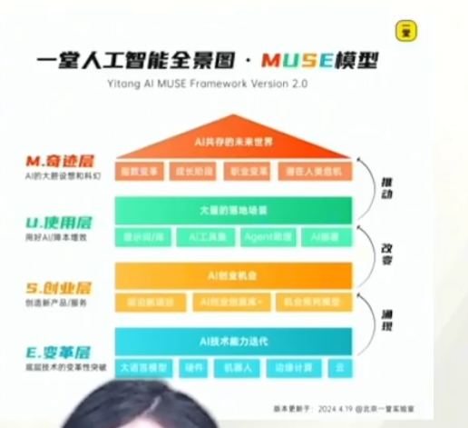

MUSE Framework · structured reconstruction
AI 机会分层工作台
把技术能力、创业机会、真实使用和未来愿景分开判断。跨层结论必须经过用户、工作流、商业与规模证据。
4分析层级
3证据桥梁
0%证据完整度
MUSE 四层模型
从底层能力向上检查，不把相关性当成因果链。
推动 · 广泛采用与制度条件共同作用
改变 · 产品供给改变行为与协作方式
涌现 · 能力与成本跨过可用阈值
涌现：能力如何变成机会
从技术变化到可购买的用户价值
改变：机会如何进入使用
从价值主张到可持续工作流
推动：使用如何形成长期结果
从局部采用到系统性未来场景
原始课件截图
保留为来源证据，不作为逐字转录依据。

结构化转译边界
- 可以确认
- M、U、S、E 四层名称，以及自下而上的“涌现、改变、推动”关系。
- 工作台新增
- 商业问题、证据标准、常见误判和三段跨层审计，是基于模型的原创应用设计。
- 不作转录
- 原图中分辨率不足、无法可靠识别的小字标签，未被猜测性补全。
- 不作证明
- 图示不能证明技术必然被采用、采用必然带来付费，或局部使用必然形成社会结果。
使用边界：证据完整度只统计字段是否填写，不评价证据真假与质量。最终结论仍需访谈、行为数据、实验和反证。